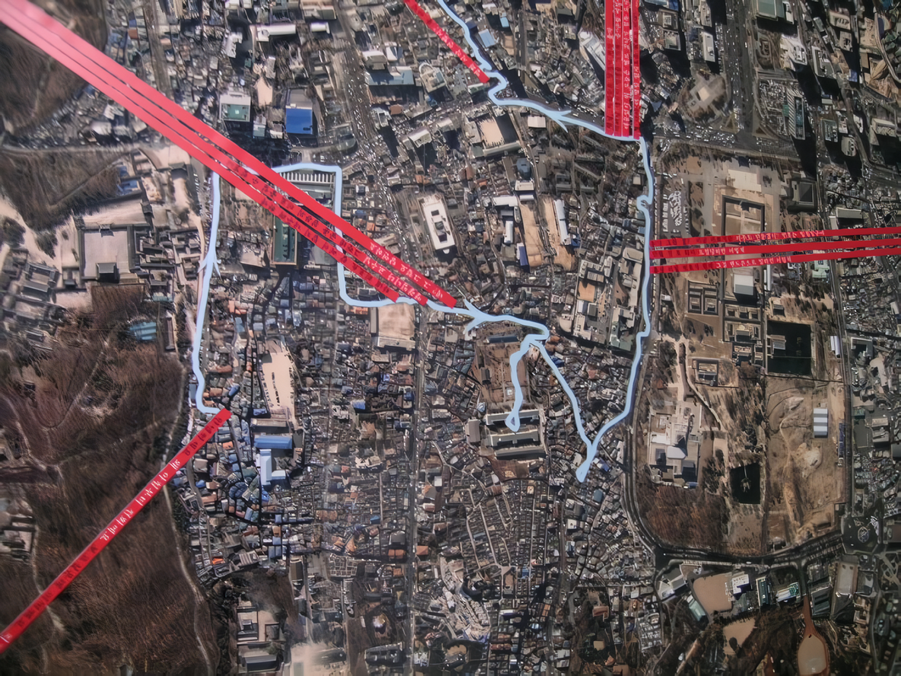
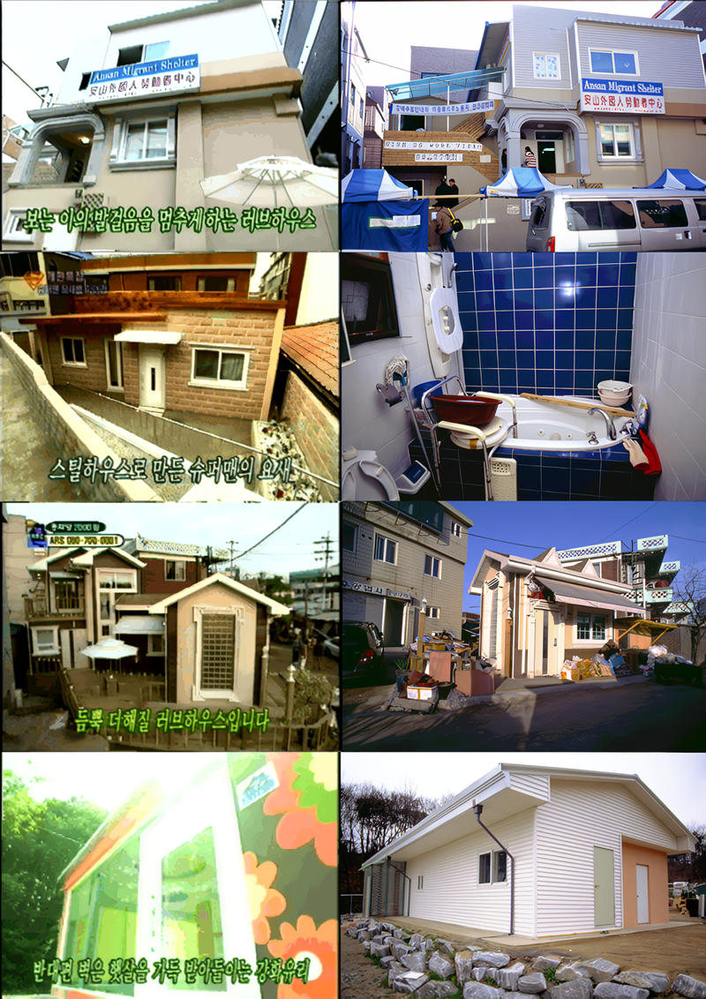
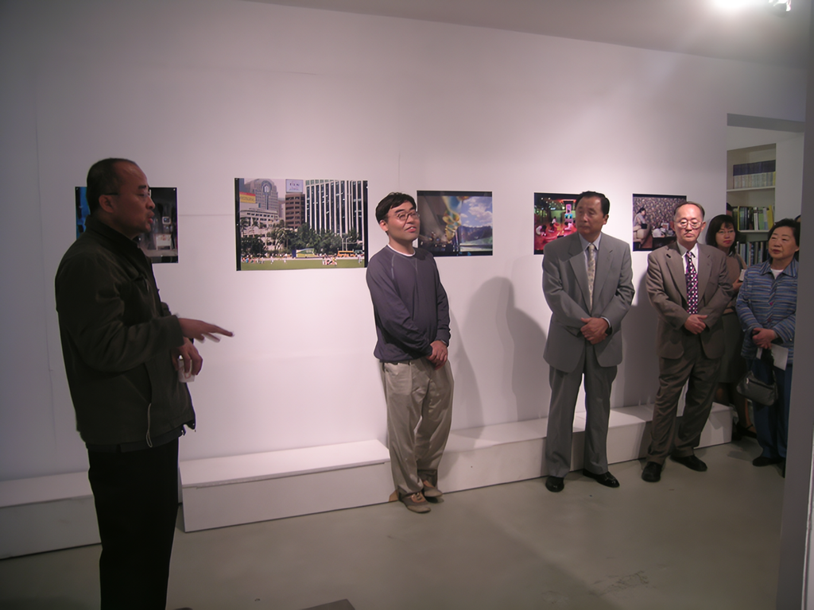
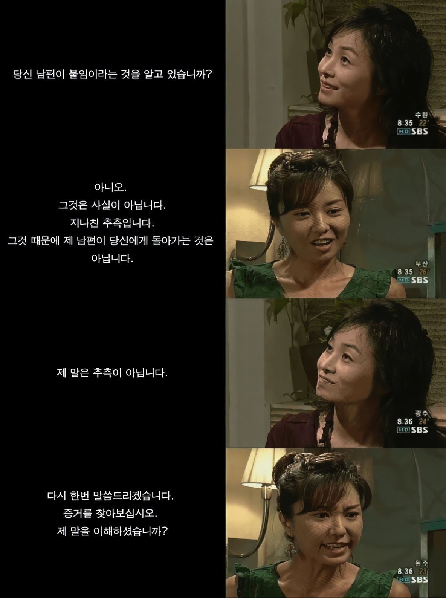
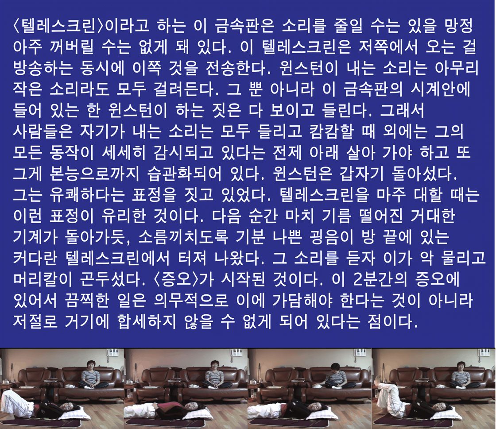
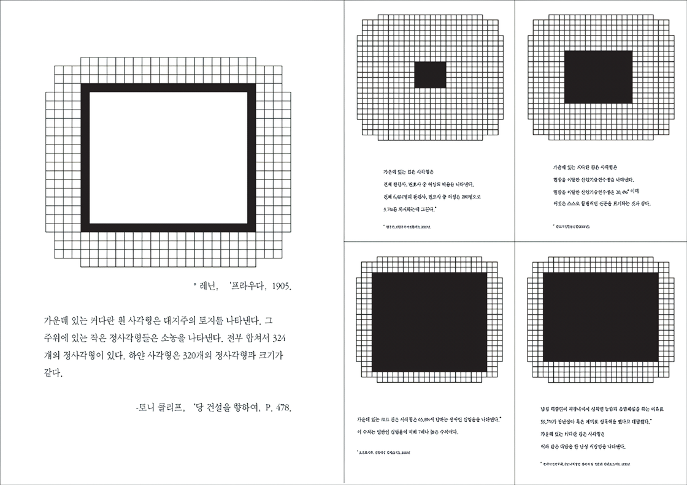
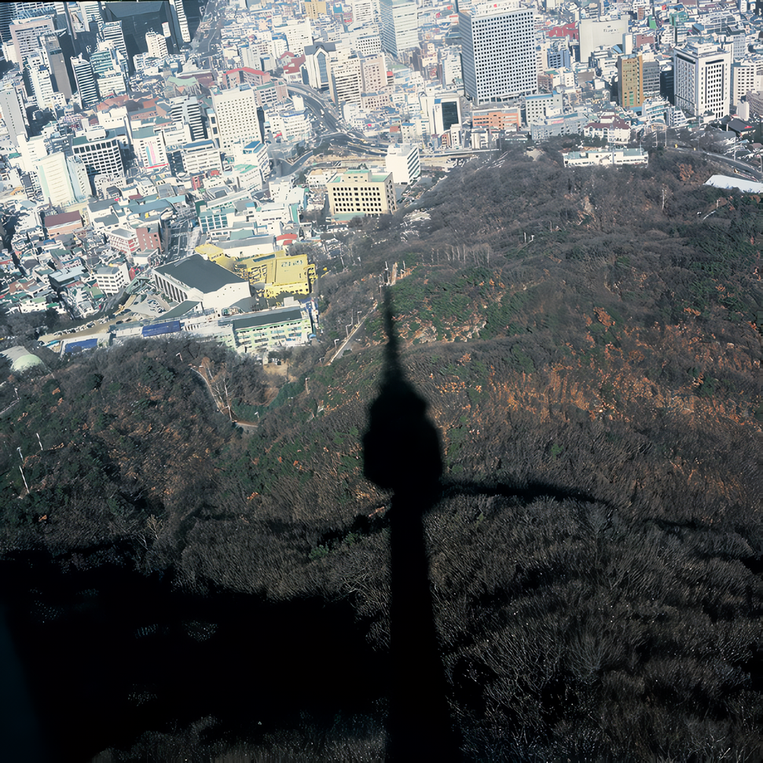
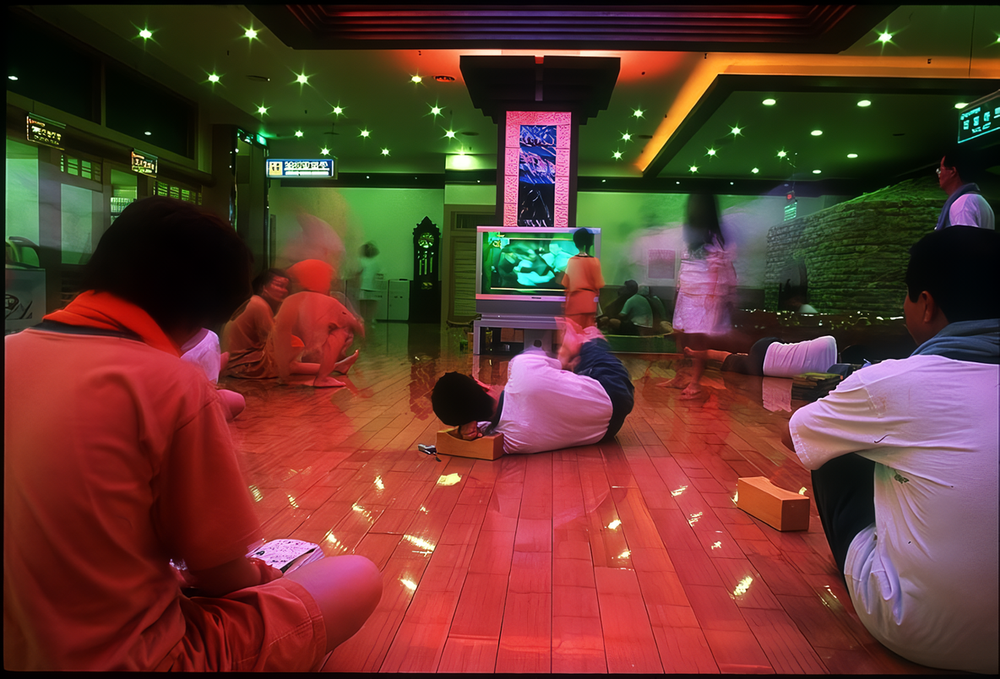
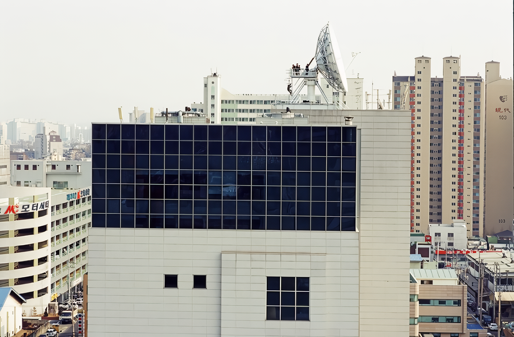

러브하우스
2005 스톤앤워터 신진작가지원 프로그램 로칼놀이 프로젝트 IV
2005_1008 ▶ 2005_1025
_waifu2x_photo_noise3_scale.png)
초대일시_2005_1008_토요일_05:00pm
작가와의 대화_2005_1014_금요일_03:00pm
러브하우스 프리젠테이션을 중심으로
2005 스톤앤워터 신진작가 지원전시 ④
후원_경기문화재단_문예진흥원 스톤앤워터
경기도 안양시 만안구 석수2동 286-15
Tel. 031_472_2886
www.stonenwater.org
이번 전시는 보충대리공간 스톤앤워터의 2005년 신진작가 지원프로그램 『로칼놀이 프로젝트』 네 번째 전시로 미디어 속에 감춰진 지배이데올로기에 대한 비판의식을 담고 있는 이은우, 이창우 2인展의 형식으로 펼쳐진다.

『로칼놀이 프로젝트』는 지역신진작가 발굴과 지역에서의 전시활동을 지원하는 스톤앤워터 프로젝트로 '로칼놀이'란 지역을 의미하는 로칼(Local)과 열량, 에너지를 의미하는 칼로리(Calorie) 그리고 놀이(nori: play, 이때 플레이play는 '전시'의 의미를 가지고 있는 디스플레이display로도 의미가 확장 된다.)―이 세 가지 의미가 결합된 합성조어이다. 이 프로젝트를 통해 지역미술의 다양한 스펙트럼을 만들어 보고자 한다. 이번 전시 타이틀-『러브하우스』傳은 MBC가 제작했던 공익오락프로그램을 대표적으로 내세워 (매스)미디어의 '이면'과 '이후'를 이야기해보고 싶다는 의도에서 '미디어에 관한 시각예술적 보고서'라 할 수 있다.
■ 스톤앤워터

기금마련 프로그램은 한 사회의 널리 퍼진 윤리와 규범을 기준에 두고 있기 때문에 지배적인 이데올로기를 전형적으로 드러내준다. 우리나라에서 그 대표 역할을 한 MBC '박수홍의 러브하우스'에서 우리가 궁금했던 것은 "주인공들은 그 후 행복하게 오래 오래 살았대 "라는 동화의 결말 이후였다. 사회자(박수홍)가 방문을 한 칸 한 칸 열 때마다 주인공들은 환성을 터뜨리고 이윽고 지나간 삶의 아픔을 비로소 아펐다고 말할 수 있는 위치에 온 듯 흐느껴 운다. 온 국민이 감동했고 이웃들도 축복했던, 방송국에서 지어준 아름답고 새로운 집에 살게 된 거주민들이 그 이후 어떻게 살고 있을까라는 단순한 질문에서 이 작업은 출발한다. 취재를 허락한 거주민들은 손녀를 키우며 고물 수집을 하는 동두천의 노부부, 안산 외국인 노동자 센터, 5-6명의 고아를 키우는 소망의 집, 수영선수 출신의 전신 장애인, 그리고 지은 지 2년 만에 재개발 계획으로 철거될 위기에 처한 나눔의 집 등이다. 수년이 흐른 현재 러브하우스 및 인근 동네의 모습과, 거주민들의 러브하우스에 대한 태도, 그들 삶의 중심적 현안들을 일년간 취재했다.
■ 이은우_이창우

미디어-블랙홀의 지도 그리기 ● '러브하우스' 이데올로기 ○ 이창우와 이은우의 공동작업 『러브하우스傳』은 연예인 박수홍과 인테리어 디자이너가 빈민들의 어려운 사정을 들은 후 새 집을 지어주고 새집 맞이 장면을 방영하는 동안 ARS로 마련된 기금을 전달하는 프로그램의 속살을 들여다보는 작품이다. "러브하우스"는 자본의 재분배라는 점에서는 긍정적이다. 그러나 시청자로 하여금 "나도 빈민을 도왔어", "이제 세상은 살만해"라는 환상을 품게 만듦으로써 사회의 구조적 불평등을 "슬며시 가리게 된다"는 점에서만이 아니라 실제 현실에서 탈맥락화된 환상적 인테리어로 틀지워진 공간 속에 시청자와 집주인들을 빨아들인다는 점에서도 이데올로기적이다. 이와 같은 공간적 이데올로기는 두 작가가 러브하우스를 원경에서 포착하여 주변의 달동네 속에 재맥락화시킬 때 선명하게 "보여진다". 그리고 부실공사로 집주인들이 자신들의 돈을 들여 보수공사를 하게 되었을 때 러브하우스의 사상누각적인 성격이 드러난다. 이런 점에서 러브하우스는 한 씬을 성공적으로 찍은 후에는 여지없이 철거되어야 하는 드라마 세트와 철저하게 닮아 있다. 따라서 러브하우스의 프로그램 제작방식은 리얼리티 쇼와 닮아 있지만 오히려 한편의 판타지 드라마에 가깝다고 할 수 있다. 이때 리얼리티 쇼라고 하는 형식이 "자선"의 판타지를 더욱 강화하고 있음은 물론이다.
 
검은 상자 「텔레스크린」 ● 「러브하우스」가 빈곤-자선-빈곤으로 이어지는 자선 판타지의 악순환을 보여주고 있다면 이은우의 「할리퀸 로맨스 V-075」는 사랑-결혼-기성체제의 공고화로 이어지는 "러브 리얼리티" 방송 프로의 낭만적 판타지를 보여주는 작품이다. 레닌이 대지주들의 토지소유 현황을 명백히 드러내기 위해 사용한 적이 있다는 모눈그래프에 할로퀸 소설을 중첩하여 써서 마치 검게 칠한 사각형처럼 보이게 만든 이 작품은 텔레비전 프로그램의 블랙홀적인 성격을 은유적으로 드러내고 있다. 여성의 남성의존적인 사랑과 결혼의 내러티브는 반복적으로 시청되고 읽혀짐으로써 기성체제의 항상성을 유지하는 데 기여하게 되는 판타지-블랙홀의 효과적인 엔진임이 드러난다. 「할리퀸 로맨스」가 남성에게 구원되는 여성의 행복한 삶의 판타지를 다루고 있다면 「(여)왕의 조건」에서 이은우는 여성과 남성에게 부여된 서로 다른 사회적 정체성으로 히스테리에 빠진 여성과 "순정"으로 미화되는 남성의 모순적인 상을 남녀 역할 교대를 통해 패러디하고 있다.

지배 이데올로기와 미디어는 현실 조건과는 상반된 가상으로 주체를 사로잡는다는 공통점을 갖고 있다. 이런 공통점을 매개로 지배 이데올로기와 미디어는 뫼비우스의 띠처럼 안에서 밖으로 이어진다. 미디어-이데올로기의 뫼비우스적 악순환 구조는 내재적 비판만으로는 깨뜨리기 어렵다. 가운데 부분을 가위로 잘라서 사회적-역사적으로 재맥락화할 때 그 악순환의 구조가 깨질 수 있다. 이은우는 레닌이 사용했다고 하는 프라우다 그래프를 이런 수단으로 활용한다. 막대그래프로 그리는 통상적인 방식과는 달리 통계 숫자를 모눈그래프로 환산하여 해당 모눈을 검게 칠함으로써 통계를 효과적으로 시각화하는 방법이다. 우리는 이 덕분에 한국사회에서 장애자와 여성으로 살아간다는 것은 그렇게 많은 검은 상자에 갇히는 것과 같은 것이라는 "메시지-이미지"를 선명하게 "볼" 수 있다.
 
「미디어 생활」의 현기증 ● 이은우의 미디어 비판의 주된 이미지는 블랙홀과 같은 캄캄한 「텔레스크린」이며, TV를 보는 사람들은 시체 혹은 중독자의 이미지로 표상된다. 미디어-이미지의 전체주의적 성격을 비판하기 위해 그녀의 작품은 이미지 대신 개념적인 축으로 이동한다. 그에 반해 이창우의 미디어 비판은 화려한 컬러 이미지들을 적극적으로 활용한다. 얼핏 보면 한강 야경의 화려한 이미지, 남산에서 내려다본 서울의 멋진 풍광, 찜질방 사람들의 각양각생의 이미지에 눈길이 가지만 자세히 보면 그 사진들의 한쪽 구석에 애니콜 광고탑이 있거나 송신탑의 그림자가 비치고 있거나 등장인물들의 시선이 텔레비전에 모아짐을 알 수 있다. 이렇게 일상을 부분적으로 점유하고 있던 미디어-시선은 경복궁-인사동 지역을 찍은 인공위성사진에 이르면 전면화 된다. 자동차와 골목길까지 선명하게 드러난 이 지도에는 그가 하루 종일 움직인 동선이 매번 휴대폰으로 통화한 내역과 함께 띠로 표시되어 있다. 이 섬뜩한 지도를 보면 우리의 일상이 공간적인 상황과 움직임만이 아니라 통화내역까지 입체적으로 감시되고 있음을 한 눈에 알 수 있다. 삼성 X 파일로 백일하에 드러난 도청의 "불온한" 그림자가 우리 자신의 일상에 깊게 드리워져 있다고 생각하는 순간 현기증을 느끼지 않을 수 없다.

파시즘의 유령 ● 최근 삼성 X파일 보도는 국가-재벌의 불온한 유착관계라는 거대한 빙산의 일각을 어쩔 수 없이 드러나게 만들었다. 한 기자의 결의에 찬 노력으로 그동안 판타지를 통해 포장했던 이데올로기적 국가-재벌 장치의 실체가 노출되고 만 것이다. 그런데 이렇게 권력의 치부가 노출되자 다른 한쪽에서 국가권력이 "참여 판타지"의 가면을 벗고 노골적인 규제의 얼굴을 드러내기 시작하고 있다. "18세 미만"으로 되어 있던 청소년의 법적 연령을 "19세 미만"으로 높이겠다는 문화관광부의 최근 발표가 바로 그것이다. 청소년들은 18세가 되면 국방의 의무를 져야 하지만 문화적 권리는 인정될 수 없다는 것이다. 비슷한 시기에 정보통신부는 사이버테러를 예방하기 위해 포털사이트에 인터넷 실명제를 도입하겠다고 발표했다. 인공위성으로 시청각적 감시체제를 갖춘 권력이 이제는 노골적으로 표현의 자유를 통제하겠다는 것이다. 그동안 우리 사회를 배회하던 파시즘의 유령이 이렇게 모습을 비치기 시작하고 있다. ● 국민 다수가 판타지-블랙홀에 중독 되어 수동적 쾌락을 욕망한다면 파시즘으로의 귀환은 얼마든지 손쉽게 이루어질 수 있다. 독도문제를 빌미로 삼은 우파 민족주의의 부활, 최저 출산율을 빌미로 한 모성주의 이데올로기의 확산 역시 파시즘의 유령이 귀환하기 좋은 시대적 배경이다. 파시즘의 귀환에 맞서기 위해서는 우리 자신의 수동적 욕망을 능동적인 자율의 능력으로 치환하는 법을 배워야 한다. 자선을 자원 활동으로, 수동적 결혼을 능동적 사랑으로, 도착자의 성을 자유인의 성으로, 경직된 신체를 역동적이고 유연한 신체로 변화시켜야 한다. 이창우와 이은우의 작업은 이런 변화를 위한 문화정치적 지도 그리기의 일환이라고 할 수 있다.
■ 심광현